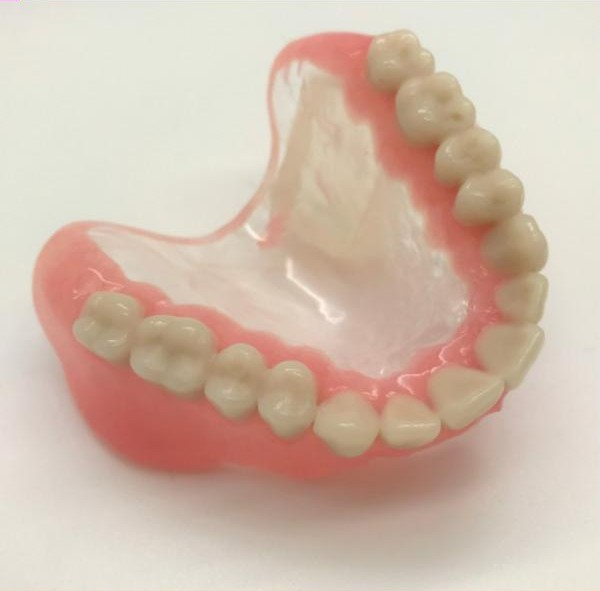
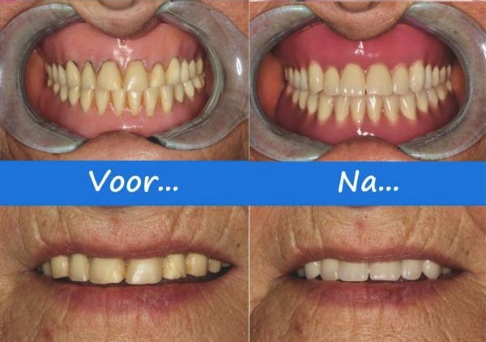
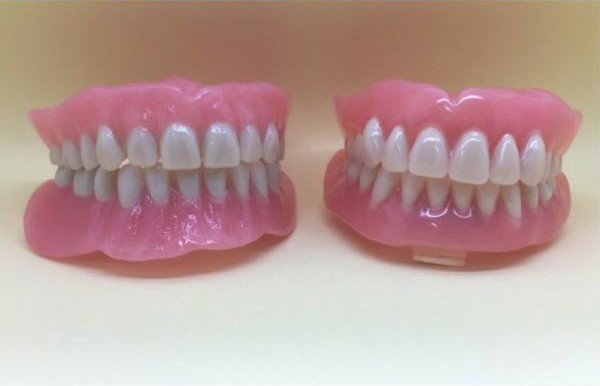
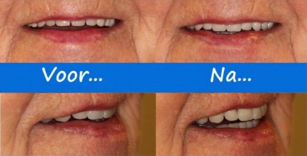
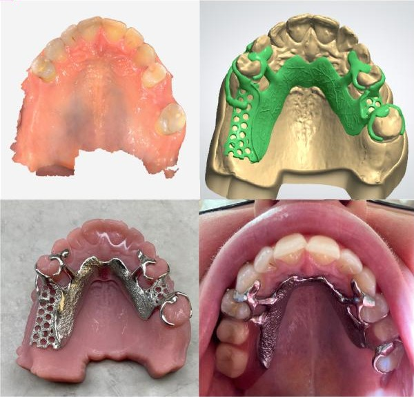

Marco van Tongeren
Tandprotheticus en eigenaar- 2001Begint in de praktijk in Veendam
- 2011Diploma Tandprothetiek, Hogeschool Utrecht
- BasisVijfjarige opleiding tandtechniek en prothetiek, Instituut Vakopleiding Tandtechniek in Nieuwegein
Elke gebitsprothese vertelt een eigen verhaal. Marco van Tongeren en zijn team meten uw prothese aan, ontwerpen hem en frezen hem in de eigen praktijk aan de Molenstreek. Digitaal waar het kan, met de hand waar het moet.

Na bijna twintig jaar weer een frisse glimlach.
Bekijk de voor en na foto'sGeen plaatjes uit een catalogus, maar werk van ons eigen tandprothetisch team. Zo ziet u wat maatwerk betekent: de kleur, de beethoogte, hoeveel roze kunststof u laat zien als u lacht.



In de praktijk staat een intraorale mondscanner. Daarmee maken we een digitale afdruk van uw mond, zonder afdrukmateriaal. Het ontwerp ontstaat op het scherm en wordt in de eigen praktijk gefreesd of geprint.

Marco van Tongeren is gespecialiseerd in het aanmeten en vervaardigen van uitneembare prothetische voorzieningen. Voor implantaten werken we nauw samen met implantologen en kaakchirurgen, en met de Parodontologie Praktijk Groningen.
Aangemeten met de mondscanner, ontworpen en gefreesd in de praktijk.
Nooit meer een losse gebitsprothese.
Naast uw eigen tanden, ook als frameprothese.
Een volledige prothese volgens de SEMCD methode.
Direct na het trekken van eigen tanden en kiezen, als tijdelijke oplossing.
Een probleem met uw prothese? U kunt snel terecht.
Lid van de ONT en aangesloten bij KRTP en SGIM. ISO 9001 gecertificeerd. Gecontracteerd door veel zorgverzekeraars.
“Ontzettend aardig en leuk personeel.”Patricia, via Google
“Zeer goede aanpak, heel vriendelijk personeel”Anneke, via Google
Ma t/m do van 08.30 tot 12.30 uur voor vragen en afspraken. Van 13.30 tot 16.00 uur voor spoed, reparaties en intakes.
Niemand aan de lijn? Spreek uw naam en nummer in, dan bellen we dezelfde of de volgende werkdag terug.
Lunchpauze van 12.30 tot 13.30 uur. Alleen op afspraak.
Molenstreek 13
9641 HA Veendam
Gratis parkeren, een invalidenparkeerplaats direct voor de deur en een laadpaal net over de brug. De praktijk is rolstoelvriendelijk.
Afspraak per e-mail